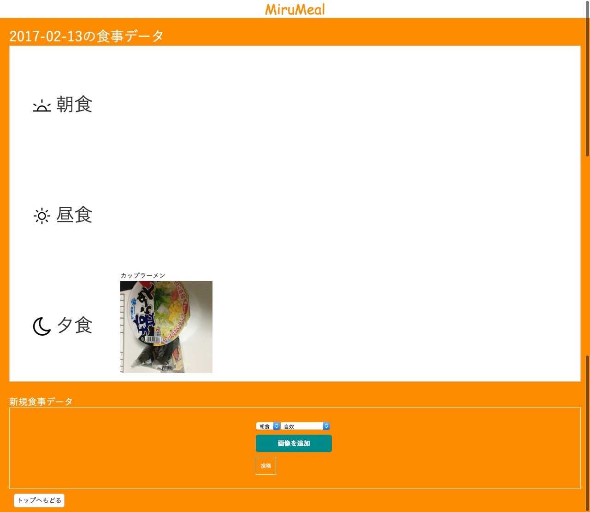
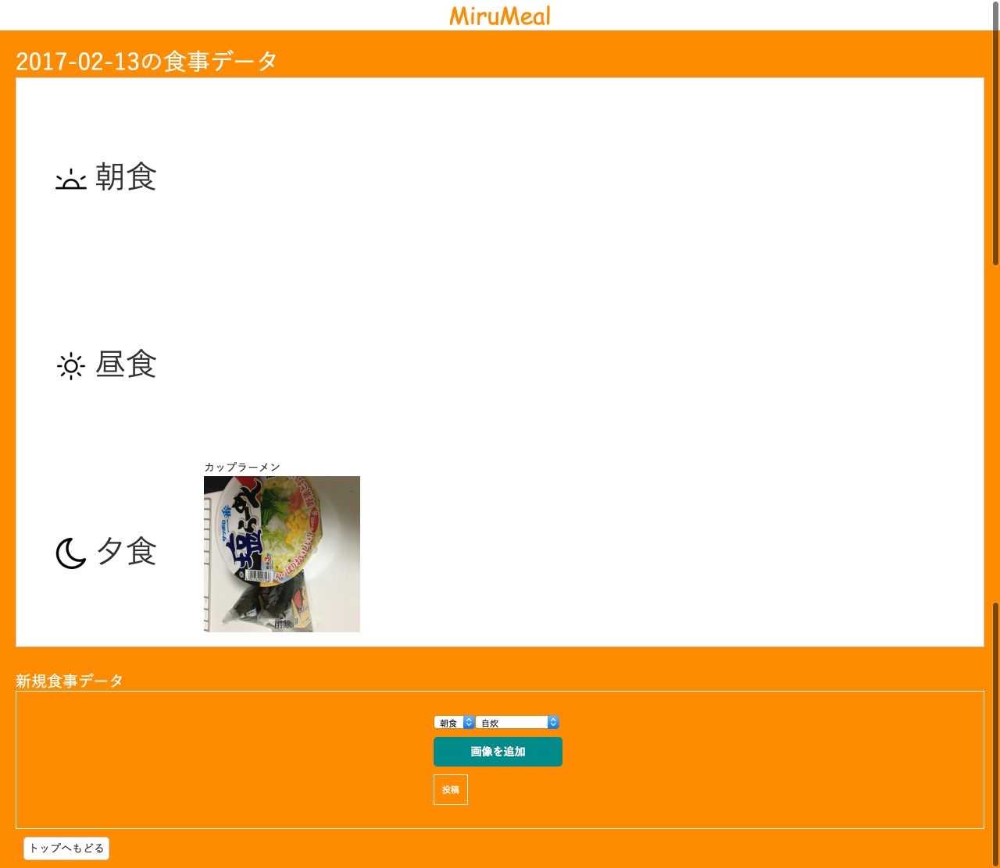
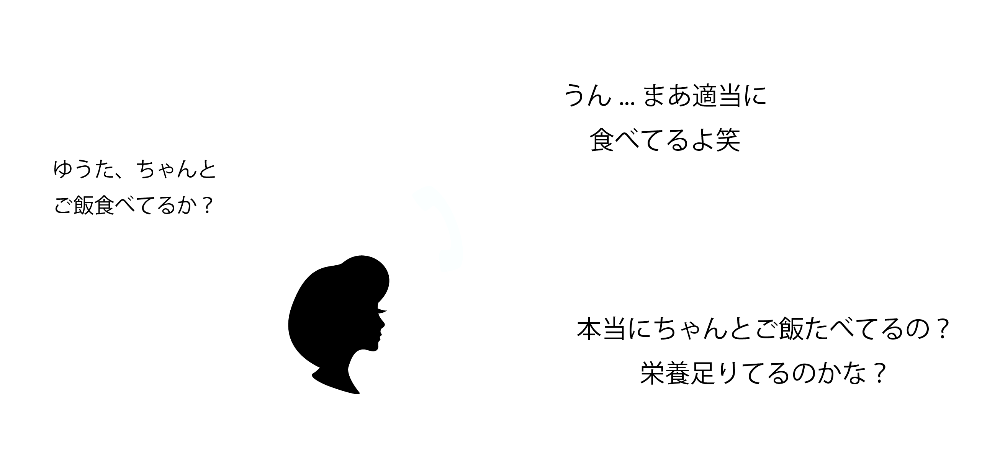

息子の食生活が気になる親御さんへ。
mirumeal
 
このアプリでこんな問題を解決できます
息子が何を食べているか、食生活のバランスが丸わかり
機能 : このアプリは親と息子で一つのアカウントを管理します。息子側は朝昼晩何を食べたかを写真で記録し、それをmirumealに投稿します。親側はそれをみてコメントを残すことができます。また、普段の食生活を円グラフで"見る"ことができます。これによって投稿する息子側も、自分の食生活を直感的に把握することができます。親側は、食生活をみて仕送りで何を送るかを決めることができるので、本当に必要な物を息子に仕送りすることができます。
「ちゃんとご飯食べてる？」と気にかける母を安心させたかった
背景 : よく母親から電話で「ちゃんとご飯食べてる？」と、私の食生活を気にかけてくれます。そんな心配を和らげてあげたいと感じ、このアプリを制作することになりました。最初は日記で食生活を記録するものを考えておりましたが、もっと自分が何を食べているかをよく把握してもらう為に、写真で記録するものに変更しました。基本的にアイデアを洗い出した後、それを実際に実装してみました。機能がある程度完成したら、今度はUI設計を行いました。これは親も見るものなので、できるだけユーザビリティを意識した設計を行いました。Illustratorでカンプを制作し、その後にHTML,CSSで実装を行いました。 アプリ完成後、実際に使っておりますが、上にある写真のように、一日カップラーメン一食のような日もあり、益々親に心配をかける結果となってしまいました。もっと食生活を見直す必要があると感じました。
使用言語、環境 : Node.js,Express,PostgreSQL,heroku,HTML,CSS,Illustrator
URL:カンプurl
herokuでアプリを確認したい方は、連絡先までお願いします！
BACK